We will be using a subset of the Freddie Mac Single-Family dataset to try to predict whether or not a mortgage loan will be delinquent using H2O's GLM, Random Forest, and GBM models. We will go over how to use these models for classification problems, and we will demonstrate how to use H2O's grid search to tune the hyper-parameters of each model. This self-paced course, as well as the next self-paced courses, will be done in Python and R.
Note: In this self-paced course, we provide complimentary instructions on how to use H2O Flow, but keep in mind that the instructions will not be as detailed as the instructions for Python and R.
Note: We have completed this self-paced course in our cloud environment and is intended to take about two hours, or less, to be completed. Therefore, if you decide to do this self-paced course on your machine, you might not get the same results, or it might take you longer to complete the self-paced course than the intended time.
For instructions on how to create an Aquarium account, and how to access the lab and self-paced course files, please refer to Appendix A: Getting Started with Aquarium
If you decide to install H2O-3 on your machine, we recommend creating an Anaconda Cloud environment, as shown in the installation guide, Install on Anaconda Cloud, this would help you make sure that you have everything that you need to do this self-paced course.
Overview
The data set we're using comes from Freddie Mac and contains 20 years of mortgage history for each loan and contains information about "loan-level credit performance data on a portion of fully amortizing fixed-rate mortgages that Freddie Mac bought between 1999 to 2017. Features include demographic factors, monthly loan performance, credit performance including property disposition, voluntary prepayments, MI Recoveries, non-MI recoveries, expenses, current deferred UPB and due date of last paid installment."[1]
We're going to use machine learning with H2O to predict whether or not a loan holder will default. To do this, we are going to build three classification models: a Linear model, Random Forest, and a Gradient Boosting Machine model, to predict whether or not a loan will be delinquent. Complete this self-paced course to see how we achieved those results.
We will start by importing H2O, the estimators for the algorithms that we will use, and also the function to perform Grid Search on those algorithms.
#Import H2O and other libaries that will be used in this self-paced course
import h2o
from h2o.estimators import *
from h2o.grid import *
We now have to initialize an H2O cluster or instance in this case, and we will use the h2o.init() command. Please note that we have some extra lines of code to check if you are running the experiment on Aquarium, or if you are running it on your local machine. If you are working on Aquarium, it will connect to the instance running in your lab. If you are working on your local machine, then it will create a new H2O-3 instance.
When you work on your local machine, you can specify how much maximum memory you want your cluster to have. This will only guarantee that the cluster will not use more than the limit you assign from your machine memory. Typically we recommend an H2O Cluster with at least 3-4 times the amount of memory as the dataset size. When you run this on Aquarium, you do not need to worry about the memory because the instance provided has almost 14Gb of memory.
import os
import h2o
startup = '/home/h2o/bin/aquarium_startup'
shutdown = '/home/h2o/bin/aquarium_stop'
if os.path.exists(startup):
os.system(startup)
local_url = 'http://localhost:54321/h2o'
aquarium = True
else:
local_url = 'http://localhost:54321'
aquarium = False
h2o.init(url=local_url)

After initializing the H2O cluster, you will see the information shown above. We have an H2O cluster with just one node. Clicking on the Flow URL from the Aquarium Lab will take you to your Flow instance, where you can see your models, data frames, plots, and much more. Click on the link, and it will take you to a window similar to the one below. Keep it open in a separate tab, as we will come back to it later on.

Next, we will import the dataset. If you are working on your machine, you can download H2O's subset of the Freddie Mac Single-Family Loan-Level dataset (Loan_Level_500k.csv) to your local drive and save it at as csv file. Make sure that the dataset is in the same directory as your Jupyter Notebook. For example, if your Jupyter file is in your Documents, save the csv file there. Or you can just specify the path of where the file is located; in our case, the file is in an S3 bucket. That's why we'll just do the following:
#Import the dataset
loan_level = h2o.import_file("https://s3.amazonaws.com/data.h2o.ai/DAI-Tutorials/loan_level_500k.csv")
Now that we have our dataset, we will explore some concepts and then do some exploration of the data and prepare it for modeling.
Please note that we use the name H2O-3 to refer to our software, and when we say H2O, we refer to specific functions or algorithms.
References
[1] Our dataset is a subset of the Freddie Mac Single-Family Loan-Level Dataset. It contains about 500,000 rows and is about 80 MB.
Overview
The data set we're using comes from Freddie Mac and contains 20 years of mortgage history for each loan and contains information about "loan-level credit performance data on a portion of fully amortizing fixed-rate mortgages that Freddie Mac bought between 1999 to 2017. Features include demographic factors, monthly loan performance, credit performance including property disposition, voluntary prepayments, MI Recoveries, non-MI recoveries, expenses, current deferred UPB and due date of last paid installment."[1]
We're going to use machine learning with H2O to predict whether or not a loan holder will default. To do this, we are going to build three classification models: a Linear model, Random Forest, and a Gradient Boosting Machine model, to predict whether or not a loan will be delinquent. Complete this self-paced course to see how we achieved those results.
We will start by importing the H2O library.
#Import the H2O library
library(h2o)
We now have to initialize an H2O cluster or instance in this case, and we will use the h2o.init() command. Please note that we have some extra lines of code to check if you are running the experiment on Aquarium, or if you are running it on your local machine. If you are working on Aquarium, it will connect to the instance running in your lab. If you are working on your local machine, then it will create a new H2O-3 instance.
When you work on your local machine, you can specify how much maximum memory you want your cluster to have. This will only guarantee that the cluster will not use more than the limit you assign from your machine memory. Typically we recommend an H2O Cluster with at least 3-4 times the amount of memory as the dataset size. When you run this on Aquarium, you do not need to worry about the memory because the instance provided has almost 14Gb of memory.
h2o.init(bind_to_localhost = FALSE, context_path="h2o")

After initializing the H2O cluster, you will see the information shown above. We have an H2O cluster with just one node. Clicking on the Flow URL from the Aquarium Lab will take you to your Flow instance, where you can see your models, data frames, plots, and much more. Click on the link, and it will take you to a window similar to the one below. Keep it open in a separate tab, as we will come back to it later on.
We will turn off the progress bars to increase our notebook readability:
# Turn off progress bars for notebook readability
h2o.no_progress()
Next, we will import the dataset. If you are working on your machine, you can download H2O's subset of the Freddie Mac Single-Family Loan-Level dataset, Loan_Level_500k.csv, to your local drive and save it at as csv file. Make sure that the dataset is in the same directory as your Jupyter Notebook or R file. For example, if your Jupyter file is in your Documents, save the csv file there. Or you can just specify the path of where the file is located; in our case, the file is in an S3 bucket. That's why we'll just do the following:
#Import the dataset
loan_level <- h2o.importFile(path = "https://s3.amazonaws.com/data.h2o.ai/DAI-Tutorials/loan_level_500k.csv")
Now that we have our dataset, we will explore some concepts and then do some exploration of the data and prepare it for modeling.
Please note that we use the name H2O-3 to refer to our software, but when we usually use the simplified name, H2O, when we refer to specific functions or algorithms.
References
[1] Our dataset is a subset of the Freddie Mac Single-Family Loan-Level Dataset. It contains about 500,000 rows and is about 80 MB.
H2O
H2O or H2O-3 is an open-source, in-memory, distributed, fast, and scalable machine learning and predictive analytics platform that allows you to build machine learning models on big data and provides easy productionalization of those models in an enterprise environment.
H2O's core code is written in Java. Inside H2O, a Distributed Key/Value store is used to access and reference data, models, objects, etc., across all nodes and machines. The algorithms are implemented on top of H2O's distributed Map/Reduce framework and utilize the Java Fork/Join framework for multi-threading. The data is read in parallel and is distributed across the cluster and stored in memory in a columnar format in a compressed way. H2O.ai's data parser has built-in intelligence to guess the schema of the incoming dataset and supports data ingest from multiple sources in various formats.
The speed, quality, ease-of-use, and model-deployment for the various cutting edge Supervised, and Unsupervised algorithms like Deep Learning, Tree Ensembles, and GLRM make H2O a highly sought after API for big data data science.
Flow
H2O Flow is an open-source user interface for H2O. It is a web-based interactive environment that allows you to combine code execution, text, mathematics, plots, and rich media in a single document.
With H2O Flow, you can capture, rerun, annotate, present, and share your workflow. H2O Flow allows you to use H2O interactively to import files, build models, and iteratively improve them. Based on your models, you can make predictions and add rich text to create vignettes of your work - all within Flow's browser-based environment.
Flow's hybrid user interface seamlessly blends command-line computing with a modern graphical user interface. However, rather than displaying output as plain text, Flow provides a point-and-click user interface for every H2O operation. It allows you to access any H2O object in the form of well-organized tabular data.
H2O Flow sends commands to H2O as a sequence of executable cells. The cells can be modified, rearranged, or saved to a library. Each cell contains an input field that allows you to enter commands, define functions, call other functions, and access other cells or objects on the page. When you execute the cell, the output is a graphical object, which can be inspected to view additional details.
Supervised Learning
Supervised learning is when the dataset contains the output that you are trying to predict. Then, you use an algorithm to try to predict a function between your input and output, such as y=f(X). With supervised learning, you train your algorithms to try to approximate a function that will allow you to predict the variable y.
Binary Classifier
A binary classification model predicts in what two categories(classes) the elements of a given set belong to. In the case of our example, the two categories(classes) are defaulting on your home loan and not defaulting.
Binary classifications produce four outcomes:
Predicticted as Positive:
True Positive = TP = Actual Positive labels predicted as positives
False Positive = FP = Actual Negative labels predicted as positives
Predicted as Negative:
True Negative = TN = Actual Negative labels predicted as negatives
False Negative = FN = Actual Positive labels predicted as negatives
Confusion Matrix
The confusion matrix is also known as the error matrix since it makes it easy to visualize the classification rate of the model, including the error rate. With the confusion matrix, you can see the frequency with which a machine learning model confuses one label with another, and thus the name "confusion matrix."
The confusion matrix can give us a better understanding of our positive and negative predictions in contrast to the actual values as seen below:
- | Predicted = 0 | Predicted = 1 |
Actual = 0 | True Negative | False Positive |
Actual = 1 | False Negative | True Positive |
ROC
An essential tool for classification problems is the ROC Curve or Receiver Operating Characteristics Curve. The ROC Curve visually shows the performance of a binary classifier; in other words, it "tells how much a model is capable of distinguishing between classes" [1] and the corresponding threshold. The ROC curve plots the sensitivity or true positive rate (y-axis) versus the Specificity or false positive rate (x-axis) for every possible classification threshold. A classification threshold or decision threshold is the probability value that the model will use to determine where a class belongs. The threshold acts as a boundary between classes to determine one class from another. Since we are dealing with probabilities of values between 0 and 1, an example of a threshold can be 0.5. This tells the model that anything below 0.5 is part of one class, and anything above 0.5 belongs to a different class. A ROC Curve is also able to tell you how well your model did by quantifying its performance. The scoring is determined by the percent of the area that is under the ROC curve, otherwise known as Area Under the Curve or AUC. The closer the ROC curve is to the left (the bigger the AUC percentage), the better the model is at separating between classes.
The ROC curve is a useful tool because it only focuses on how well the model was able to distinguish between classes. "AUC's can help represent the probability that the classifier will rank a randomly selected positive observation higher than a randomly selected negative observation" [2]. However, on rare occurrences, a high AUC could provide a false sense that the model is correctly predicting the results.
Precision and Recall
Precision is the ratio of correct positive predictions divided by the total number of positive predictions. This ratio is also known as positive predictive value and is measured from 0.0 to 1.0, where 0.0 is the worst, and 1.0 is the best precision.
Recall is the true positive rate, which is the ratio of the number of true positive predictions divided by all true positive predictions. Recall is a metric of the actual positive predictions. It tells us how many correct positive results occurred from all the positive samples available during the test of the model.
F1 Score
The F1 Score is another measurement of classification accuracy. It represents the harmonic average of precision and recall. F1 is measured in the range of 0 to 1, where 0 means that there are no true positives, and 1 when there is neither false negatives or false positives or perfect precision and recall[3].
Accuracy
Accuracy or ACC (not to be confused with AUC or area under the curve) is a single metric in binary classification problems. ACC is the ratio of the number of correct predictions divided by the total number of predictions. In other words, it describes how well the model can correctly identify both the true positives and true negatives. Accuracy is measured in the range of 0 to 1, where 1 is perfect accuracy or perfect classification, and 0 is poor accuracy or poor classification[4]. Using the confusion matrix table, ACC can be calculated in the following manner: Accuracy = (TP + TN) / (TP + TN + FP + FN)
Log loss
The logarithmic loss metric can be used to evaluate the performance of a binomial or multinomial classifier. Unlike AUC, which looks at how well a model can classify a binary target, logloss evaluates how close a model's predicted values (uncalibrated probability estimates) are to the actual target value. For example, does a model tend to assign a high predicted value like .80 for the positive class, or does it show a poor ability to recognize the positive class and assign a lower predicted value like .50? A model with a log loss of 0 would be the perfect classifier. When the model is unable to make correct predictions, the log loss increases, making the model a poor model[5].
Cross-Validation
Cross-validation is a model validation technique in which you can check how well a statistical analysis or model, will perform on an independent dataset. We use cross-validation to see how our model will predict on unseen data. We will explore two cross-validation approaches. The first one is to take the training data and split it into training and validation set, which is similar to a test set. This approach is called validation set cross-validation. Also, there is K-Fold cross-validation, in which you do not need to split the data, but use the entire dataset. Depending on the number of folds that you choose during training, the data is divided into k groups; k-1 groups are trained, and then, the last group serves to evaluate. After every group has been used to evaluate the model, the average of all the scores is obtained; and thus, we obtain a validation score[6].
References
[1] Towards Data Science - Understanding AUC- ROC Curve
[2] ROC Curves and Under the Curve (AUC) Explained
[3] Wiki F1 Score
[4] Wiki Accuracy
[5] Wiki Log Loss
[6] Towards Data Science - Cross-Validation
Resources
To ensure the dataset was properly imported use the .head() function to check the first ten rows of your dataset
loan_level.head()
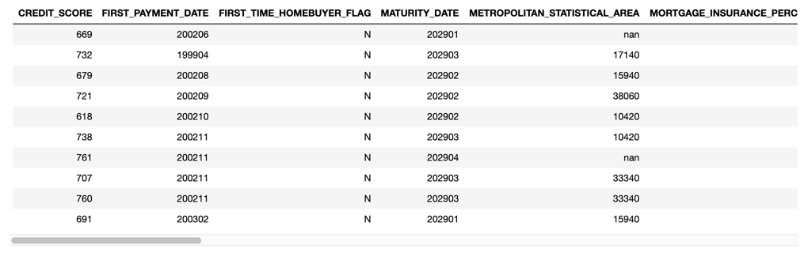
Your results should look like the table above. If you scroll to the right, you will be able to see all the features in our dataset. We can also take a look at a quick statistical summary of our dataset with the .describe() command as shown below
loan_level.describe()

The total number of rows in our dataset is 500,137, and the total number of features or columns is 27. Additionally, you will get a sense of the spread of each of your columns, the column type, as well as the number of missing and zero values in your dataset.
Let's take a quick look at the response column by checking the distribution.
loan_level["DELINQUENT"].table()

As you can see, we have a highly imbalanced dataset, as only 3.6% of the samples are TRUE labels, meaning that only 3.6% of the samples in the dataset have been labeled as DELINQUENT.
Please note that the main goal of this self-paced course is to show the usage of some models for classification problems, as well as to tune some of the hyper-parameters of the models. For that reason, we will be skipping any data visualization and manipulation, as well as feature engineering. The aforementioned stages in machine learning are very important, and should always be done; however, they will be covered in later self-paced courses.
Since we have a large enough dataset, we will split our dataset into three sets, and we will call them train, valid, and test. We will treat the test set as if it were some unseen data in which we want to make predictions, and we will use the valid set for validation purposes and to tune all our models. We will not use the test set until the end of the self-paced course to check the final scores of our models.
We will use the .split_frame() function. Note that we can do this in one line of code. Inside the split function, we declare the ratio of the data that we want in our first set, in this case, the train set. We will assign 70% to the training set, and 15% for the validation, as well as for the test set. The random seed is set to 42 just for reproducibility purposes. You can choose any random seed that you want, but if you want to see consistent results, you will have to use the same random seed anytime you re-run your code.
train, valid, test = loan_level.split_frame([0.7, 0.15], seed=42)
We can check the distribution of the data split by checking the number of rows in each set.
print("train:%d valid:%d test:%d" % (train.nrows, valid.nrows, test.nrows))
Output:
train:350268 valid:74971 test:74898
Next, we need to choose our predictors, or x variable, and our response or y variable. For the H2O-3 estimators, we do not use the actual data frame; instead, we use strings containing the name of the columns in our dataset.
For our y variable, we will choose DELINQUENT because we want to predict whether or not a loan will default. For the x variable, we will choose all but four features. One is the feature that we will predict, and then PREPAID and PREPAYMENT_PENALTY_MORTGAGE_FLAG because they are clear indicators if a loan is or is not delinquent. As well, it makes sense to remove them, given that in a real case scenario, we will not have that information when deciding whether to give a loan or not. In machine learning terms, introducing these types of features is called leakage. And lastly, PRODUCT_TYPE because that's a constant value for every row, meaning all samples have the same value; therefore, this feature will not have any predictive value.
There are several ways to choose your predictors, but for this self-paced course, we will subtract the list in the variable ignore from all the names in our training set.
y = "DELINQUENT"
ignore = ["DELINQUENT", "PREPAID", "PREPAYMENT_PENALTY_MORTGAGE_FLAG", "PRODUCT_TYPE"]
x = list(set(train.names) - set(ignore))
If you want to see the list of the features that are in your x variable, just print x.
print(x)
Output:
['PROPERTY_TYPE', 'NUMBER_OF_UNITS', 'POSTAL_CODE', 'CREDIT_SCORE', 'NUMBER_OF_BORROWERS', 'ORIGINAL_INTEREST_RATE', 'ORIGINAL_LOAN_TERM', 'ORIGINAL_DEBT_TO_INCOME_RATIO', 'ORIGINAL_UPB', 'FIRST_TIME_HOMEBUYER_FLAG', 'SELLER_NAME', 'LOAN_SEQUENCE_NUMBER', 'PROPERTY_STATE', 'MATURITY_DATE', 'ORIGINAL_LOAN_TO_VALUE', 'ORIGINAL_COMBINED_LOAN_TO_VALUE', 'MORTGAGE_INSURANCE_PERCENTAGE', 'METROPOLITAN_STATISTICAL_AREA', 'OCCUPANCY_STATUS', 'CHANNEL', 'FIRST_PAYMENT_DATE', 'SERVICER_NAME', 'LOAN_PURPOSE']
To ensure the dataset was properly imported use the h2o.head() function to check the first ten rows of your dataset. Please note that we need to set a value for n to get the desired numbers of rows.
# Get first rows of your data
h2o.head(loan_level, n = 10)

Your results should look like the table above. If you click on the top right corner arrow, you will be able to see all the features in our dataset.
We can also take a look at a quick statistical summary of our dataset with the h2o.describe() command as shown below
# Get an statistical description of your data
h2o.describe(loan_level)
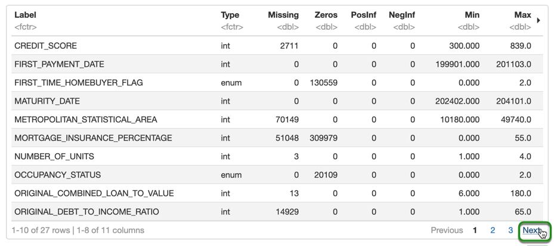
The total number of rows in our dataset is 500,137, and the total number of features or columns is 27. Additionally, you will get a sense of the spread of each of your columns, the column type, as well as the number of missing and zero values in your dataset.
Let's take a quick look at the response column by checking the distribution.
# Print a table with the distribution for column "DELINQUENT"
h2o.table(loan_level[, c("DELINQUENT")])

As you can see, we have a highly imbalanced dataset, as only 3.6% of the samples are TRUE labels, meaning that only 3.6% of the samples in the dataset have been labeled as DELINQUENT.
Please note that the main goal of this self-paced course is to show the usage of some models for classification problems, as well as to tune some of the hyper-parameters of the models. For that reason, we will be skipping any data visualization and manipulation, as well as feature engineering. The aforementioned stages in machine learning are very important, and should always be done; however, they will be covered in later self-paced courses.
Since we have a large enough dataset, we will split our dataset into three sets, and we will call them train, valid, and test. We will treat the test set as if it were some unseen data in which we want to make predictions, and we will use the valid set for validation purposes and to tune all our models. We will not use the test set until the end of the self-paced course to check the final scores of our models.
We will use the h2o.splitFrame() function. Inside the split function, we declare the ratio of the data that we want in our first set, in this case, the train set. We will assign 70% to the training set, and 15% for the validation, as well as for the test set. The random seed is set to 42 just for reproducibility purposes. You can choose any random seed that you want, but if you want to see consistent results, you will have to use the same random seed anytime you re-run your code.
# Split your data into 3 and save into variable "splits"
splits <- h2o.splitFrame(loan_level, c(0.7, 0.15), seed = 42)
The variable splits contains all three frames, so we need to separate them:
# Extract all 3 splits and save them as train, valid and test
train <- splits[[1]]
valid <- splits[[2]]
test <- splits[[3]]
We can check the row distribution of the data split by checking the number of rows in each set.
# Check the number of rows for each set
nrow(train)
nrow(valid)
nrow(test)
Output:
350268
74971
74898
Next, we need to choose our predictors, or x variable, and our response or y variable. For the H2O-3 estimators, we do not use the actual data frame; instead, we use strings containing the name of the columns in our dataset.
For our y variable, we will choose DELINQUENT because we want to predict whether or not a loan will default. For the x variable, we will choose all but four features. One is the feature that we will predict, and then PREPAID and PREPAYMENT_PENALTY_MORTGAGE_FLAG because they are clear indicators if a loan is or is not delinquent. As well, it makes sense to remove them, given that in a real case scenario, we will not have that information when deciding whether to give a loan or not. In machine learning terms, introducing these types of features is called leakage. And lastly, PRODUCT_TYPE because that's a constant value for every row, meaning all samples have the same value; therefore, this feature will not have any predictive value.
There are several ways to choose your predictors, but for this self-paced course, we will ignore the list in the variable ignore from all the names in our training set.
# Identify predictors and response
# Columns not used for training
ignore <- c("DELINQUENT", "PREPAID", "PREPAYMENT_PENALTY_MORTGAGE_FLAG", "PRODUCT_TYPE")
y <- "DELINQUENT"
x <- setdiff(colnames(train), ignore)
If you want to see the list of the features that are in your x variable, just print x.
print(x)
Output:
[1] "CREDIT_SCORE" "FIRST_PAYMENT_DATE"
[3] "FIRST_TIME_HOMEBUYER_FLAG" "MATURITY_DATE"
[5] "METROPOLITAN_STATISTICAL_AREA" "MORTGAGE_INSURANCE_PERCENTAGE"
[7] "NUMBER_OF_UNITS" "OCCUPANCY_STATUS"
[9] "ORIGINAL_COMBINED_LOAN_TO_VALUE" "ORIGINAL_DEBT_TO_INCOME_RATIO"
[11] "ORIGINAL_UPB" "ORIGINAL_LOAN_TO_VALUE"
[13] "ORIGINAL_INTEREST_RATE" "CHANNEL"
[15] "PROPERTY_STATE" "PROPERTY_TYPE"
[17] "POSTAL_CODE" "LOAN_SEQUENCE_NUMBER"
[19] "LOAN_PURPOSE" "ORIGINAL_LOAN_TERM"
[21] "NUMBER_OF_BORROWERS" "SELLER_NAME"
[23] "SERVICER_NAME"
You can also import your dataset from H2O Flow, by clicking importFiles and then viewing the actual table once it's imported. Go to your Flow instance and add a new cell.

Copy and paste the following line of code in the new cell and run it. Then, click on Parse these files
importFiles ["https://s3.amazonaws.com/data.h2o.ai/DAI-Tutorials/loan_level_500k.csv"]

After clicking on Parse these files, you will see a parse set-up similar to the image below:

H2O will try to parse the file and assign appropriate column types. But you can change column types if they're not imported correctly. After you have inspected the parse set-up, click on parse.
Once finished, you will see the following message, confirming that the parsing was completed.

Now we will split the dataset in our Flow instance. Click on View, then Split and use the default ratios of 0.75 for train, and 0.25 for test and change the names accordingly. Also, change the seed to 42 and click Create

Now that we have our train, valid, and test sets, as well as our x and y variables defined, we can start building models! We will start with an H2O Generalized Linear Model (GLM). A GLM fits a generalized linear model, specified by a response variable, a set of predictors, and a description of the error distribution. Since we have a binomial classification problem, we have to specify the family, in this case, it will be binomial.
Since we already imported the H2O GLM estimator, we will just instantiate our model. For simplicity, the name of our model will be glm. To build a GLM, you just need to define the family, and you are ready to go. However, we will set a random seed for reproducibility purposes, and also a model id to be able to retrieve the model later on if we need to access it. You can instantiate your GLM, as shown below.
glm = H2OGeneralizedLinearEstimator(family = "binomial", seed = 42, model_id = 'default_glm')
Now we will train our GLM model. To do so, we just use the .train() function. In the train function, we need to specify the predictors (x), the response (y), the training set (train), and a validation frame, if you have one. In our case, we have our valid set, which we will use.
%time glm.train(x = x, y = y, training_frame = train, validation_frame = valid)
Note: The %time in front of our train command is used to display the time it takes to train the model, and it's a feature from Jupyter Notebook; it does not work on a command line or outside of Jupyter Notebook.
You have now built and trained a GLM! If you type the name of your model in a new cell and run it, H2O will give you a complete summary of your model. You will see your model's metrics on the training and validation set. From the model details, you will see a short summary with the parameters of your model, the metrics of your model, the confusion matrix, maximum metrics at different thresholds, a Gains/Lift table, and the scoring history. (Gains/Lift and scoring history are not shown below)


From the summary results, we can see the GLM performance. We will focus on the Area Under the Curve (AUC), and since we have a very imbalanced dataset, we will be looking at the F1 score. Additionally, we will also take a quick look at the misclassification error and logloss.
From the report, we can look at the metrics on the training and validation data, and we see that the training AUC was 0.8502 while the validation AUC was 0.8450


From the report, we can also see the max F1 score as well as all the metrics for our model with their respective thresholds. For the default GLM, we obtained a training F1 score of 0.2882 and a validation F1 score of 0.2827.
Training maximum metrics

Validation maximum metrics

We can plot the Scoring history for any of our models, as shown below:
glm.plot(metric='negative_log_likelihood')

We can see from the plot above that after four iterations, the score no longer improves; therefore, if we needed to set a number of iterations as a future parameter, we can choose 4, as the scores don't really improve after that point. We can also use the default number of iterations and use early stopping; that way, the model will stop training when it is no longer improving. We will use early stopping when we start tuning our models.
We can also generate a variable importance plot to see how each of our features contribute to the linear model.
glm.varimp_plot()
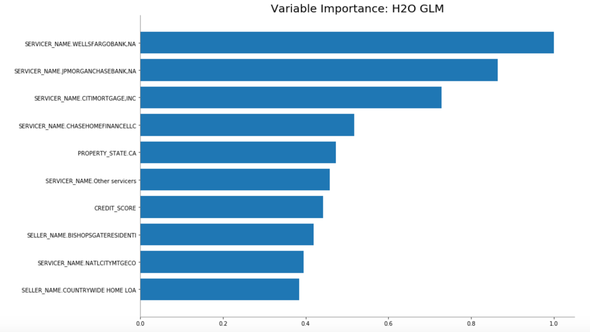
From the variable importance plot, we can see that the most significant feature is SERVICER_NAME. In the most important feature, we have different banks or "servicers," and in our linear model, each one makes a difference; for that reason, we see that the first four variables in the plot above are 4 of the servicers in the dataset. These services are the most influential to our model in making predictions of whether someone will default or not. Please keep in mind that it does not necessarily mean that if someone gets a loan from Wells Fargo, they have a high probability of default.
You can also print individual metrics as well:
glm.accuracy()
Output
[[0.9757992545882868, 0.9638505373028652]]
Note that if you wanted to output the metric for a specific threshold, you just need to define the threshold inside the parenthesis as shown below:
glm.accuracy(thresholds = 0.9638505373028652)
This should give you the same output as before.
We will now take a look at the first ten predictions of our model with the following command:
glm.predict(valid).head(10)

Note: if you want to see more predictions use the .head() function, as shown in the line of code above; it should allow you to view all the predictions on the validation set that you want.
The model used by H2O for this classification problem is a Logistic Regression model, and the predictions are based on the threshold for each probability[1]. For a binary classifier, H2O predicts the labels based on the maximum F1 threshold. From the report, the threshold for the validation max F1 is 0.1224. So, any time the probability for TRUE is greater than the 0.1224, the predicted label will be TRUE, as is in the case of the sixth prediction. To learn more about predictions, you can visit the Prediction Section from the H2O documentation.
Lastly, save the default performance of the model, as we will use this for comparison purposes later on.
default_glm_perf=glm.model_performance(valid)
Once you save the model performance on a different data set, you can print individual metrics, such as the AUC as shown below.
print(default_glm_perf.auc())
Output:
0.8449582112507165
The AUC score is the same as the one from the model summary that we printed before.
References
Now that we have our train, valid, and test sets, as well as our x and y variables defined, we can start building models! We will start with an H2O Generalized Linear Model (GLM). A GLM fits a generalized linear model, specified by a response variable, a set of predictors, and a description of the error distribution. Since we have a binomial classification problem, we have to specify the family, in this case, it will be binomial.
Since we already imported the H2O GLM estimator, we will just instantiate our model. For simplicity, the name of our model will be glm. To build a GLM, you need to specify your x, y, training_frame, and validation_frame, if you have one. You also need to define the family, and you are ready to go. However, we will set a random seed for reproducibility purposes, and also a model id to be able to retrieve the model later on if we need to access it. You can instantiate your GLM, as shown below.
# Train a GLM
glm <- h2o.glm(x = x,
y = y,
training_frame = train,
model_id = "default_glm",
validation_frame = valid,
seed = 42,
family = c("binomial"))
You have now built and trained a GLM! If you type the name of your model in a new cell and run it, H2O will give you a complete summary of your model. You will see your model's metrics on the training and validation set. From the model details, you will see a short summary with the parameters of your model, the metrics of your model, the confusion matrix, and maximum metrics at different thresholds.


From the summary results, we can see the GLM performance. We will focus on the Area Under the Curve (AUC), and since we have a very imbalanced dataset, we will be looking at the F1 score. Additionally, we will also take a quick look at the misclassification error and logloss.
From the report, we can look at the metrics on the training and validation data, and we see that the training AUC was 0.8502 while the validation AUC was 0.8450
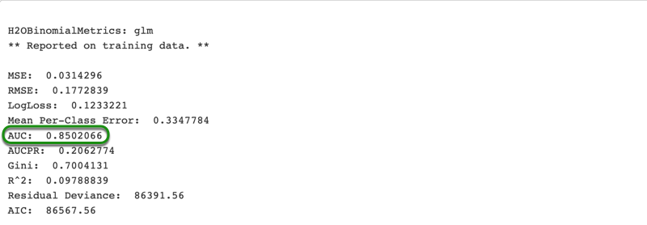
From the report, we can also see the max F1 score as well as all the metrics for our model with their respective thresholds. For the default GLM, we obtained a training F1 score of 0.2881 and a validation F1 score of 0.2827.
Training maximum metrics

Validation maximum metrics

We can also generate a variable importance plot to see how each of our features contribute to the linear model.
# Plot the variable importance
h2o.varimp_plot(glm)

From the variable importance plot, we can see that the most significant feature is SERVICER_NAME. In the most important feature, we have different banks or "servicers," and in our linear model, each one makes a difference; for that reason, we see that the first four variables in the plot above are 4 of the servicers in the dataset. These services are the most influential to our model in making predictions of whether someone will default or not. Please keep in mind that it does not necessarily mean that if someone gets a loan from Wells Fargo, they have a high probability of default.
You can also print individual metrics as well after evaluating your models' performance:
# Save model performance on training set
train_glm_perf <- h2o.performance(glm, train)
# Save model performance on validation set
valid_glm_perf <- h2o.performance(glm, valid)
Now we can print individual metrics at their respective threshold. To do this, we need to be able to access the desired thresholds. When we printed the model's details we saw that accuracy is the fourth metric, and therefore, we need to access fourth threshold:
# Accessing threshold for max accuracy - verify with previous output
train_glm_perf@metrics$max_criteria_and_metric_scores$threshold[4]
Output
0.9757993
Now you can print the training accuracy at it's threshold:
# Print training accuracy for threshold that maximizes accuracy
h2o.accuracy(train_glm_perf, thresholds = train_glm_perf@metrics$max_criteria_and_metric_scores$threshold[4])
Output
0.9638505
We can also print the validation AUC of our model:
# Print the AUC value
h2o.auc(valid_glm_perf)
Output
0.8449582
You can retrieve the ROC curve:
# Plot the ROC curve
plot(valid_glm_perf)

We will now take a look at the first ten predictions of our model with the following command:
# Make predictions on validation set using our GLM model
h2o.predict(glm, valid)

Note: if you want to see more predictions use the h2o.head() function, and setting the value of n to the desired value, as shown in the line of code above; it should allow you to view all the predictions on the validation set that you want. This can be done as follow:
head(h2o.predict(glm, valid), n=10)
The model used by H2O for this classification problem is a Logistic Regression model, and the predictions are based on the threshold for each probability[1]. For a binary classifier, H2O predicts the labels based on the maximum F1 threshold. From the report, the threshold for max F1 is 0.1261. So, any time the probability for TRUE is greater than the 0.1261, the predicted label will be TRUE, as is in the case of the sixth prediction. To learn more about predictions, you can visit the Prediction Section from the H2O documentation. Next, we will start building a Random Forest.
References
You can also build models in Flow with the Build Model dialog. Click on your train set, and click on Build Model, then scroll down to the "Build a Model" cell, and select Generalized Linear Modeling for the algorithm. For model id, you can use flow_default_glm. Instead of doing cross-validation with a validation set, we are going to use Flow's K-fold cross-validation; therefore, type 5 for nfolds, and set the random seed to 42. Again, choose DELINQUENT for your response_column, and for the ignored columns, choose PREPAYMENT_PENALTY_MORTGAGE_FLAG, PRODUCT_TYPE, PREPAID. Lastly, choose binomial for family.

Once the model is done training, click on "View"

Expand the Model parameters tab, and you will see a description of the parameters for your model.

If you scroll down, you will see some plots derived from the training data. The first one is the scoring history plot.

We can see that the scoring history from Flow shows us that after four iterations, the score does not improve. Even though we are doing different cross-validation, validation set approach in the python script, and k-fold cross-validation in Flow, we obtained the same results, indicating that four iterations are enough.
If you continue scrolling down, you will see:
- ROC Curve Training Metrics
- ROC Curve Cross-validation Metrics
- Standardized Coefficients Magnitudes
- Training Metrics - Gains/Lift Table
- Cross-Validation Metrics - Gains/Lift Table
And then all types of outputs When all the tabs are collapsed, you will see the following list of details from your model:

You can also take a look at the details of the model you built in your Jupyter Notebook. Scroll up to the Assist Cell and click on getModels
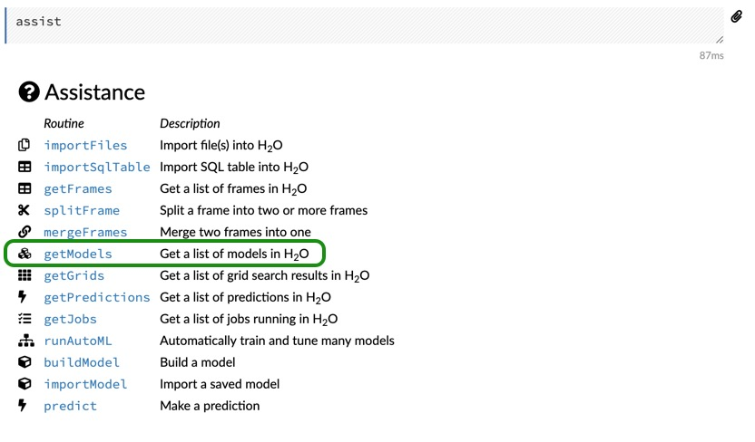
Then select default_glm

You can inspect all the plots and outputs from your model in Flow. The plots that we generate in the Jupyter Notebook or RStudio, are automatically created in Flow, so if you prefer, you can just create your model in Jupyter or RStudio and then analyze the results in Flow.
We will build a default Distributed Random Forest (DRF) model and see how it performs on our validation set. DRF generates a forest of classification or regression trees, rather than a single classification or regression tree. Each of these trees is a weak learner built on a subset of rows and columns. More trees will reduce the variance. Both classification and regression take the average prediction over all of their trees to make a final prediction, whether predicting for a class or numeric value.
To build and train our Random Forest or RF(as we will be referring to from this point on) model, simply run the following two lines of code:
rf = H2ORandomForestEstimator (seed = 42,
model_id = 'default_rf')
%time rf.train(x = x, y = y, training_frame = train, validation_frame = valid)
Note that we defined the random seed and the model id. You do not need to do this; the model can be built without defining these parameters. The reason for choosing the random seed is for reproducibility purposes, and the model id is to recognize the model in Flow easily.
Again, print the summary of your model as we did with the GLM model. You will see the summary of the model with the default settings, and the metrics score on the training and validation data.
Below you will see some of the details from the model we just built.
The AUC and F1 Score reported on the training data are 0.8033 and 0.2620, respectively, and you can see them in the image below.
 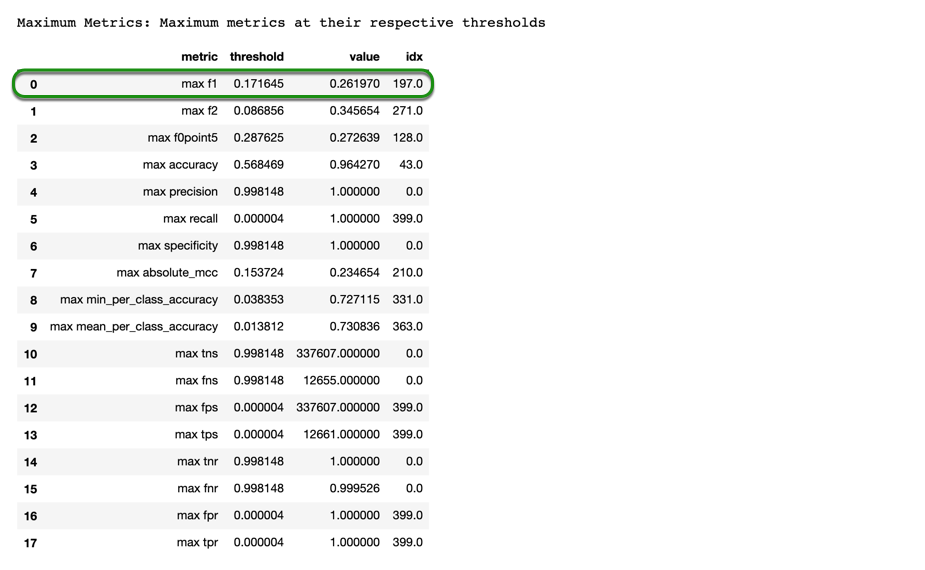
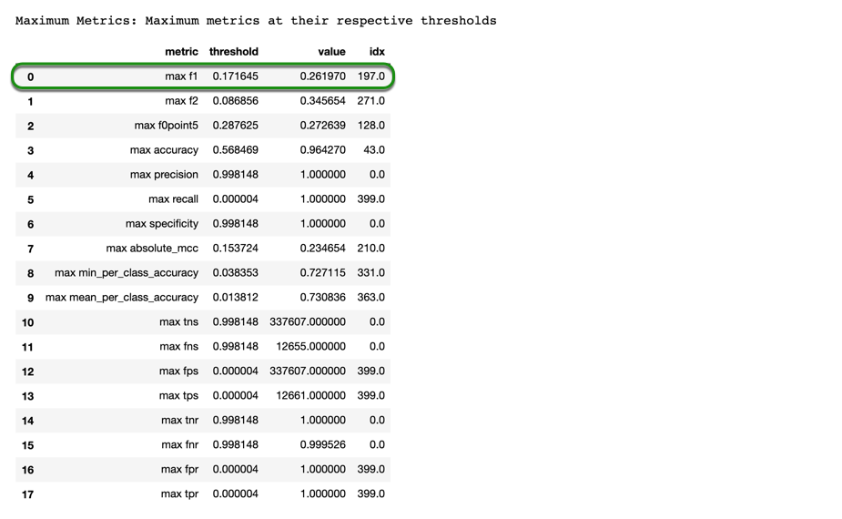
Results from validation data
The AUC and F1 Score reported on the validation data are 0.8265 and 0.2830, respectively.


If you would like, you can view the outputs of your RF model in Flow. However, we can also generate the plots in our Jupyter Notebook.
rf.plot(metric = 'auc')
You will see a plot similar to the one below
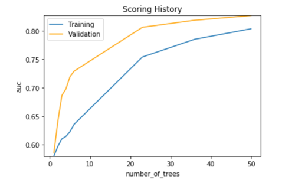
In this case, we see that the RF model is far from overfitting because the training error is still lower than the validation error, and that means that we can probably do some tuning to improve our model.
We can also generate the variable importance plot,
rf.varimp_plot(20)
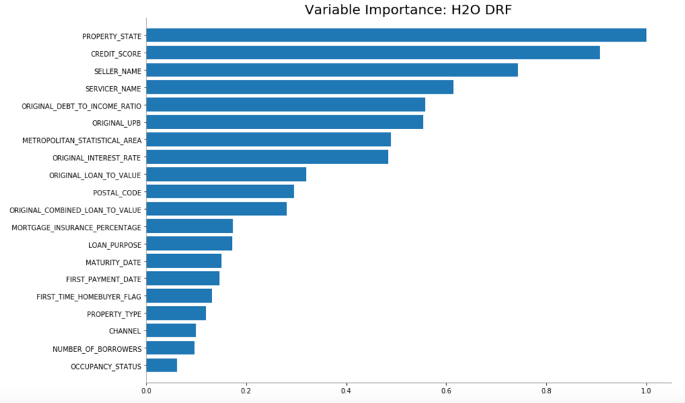
It is interesting to see that for our RF model, PROPERTY_STATE Is the most important variable, implying that the prediction of whether a loan could be delinquent or not depends on the state where someone is trying to buy that property. The second most important is a more intuitive one, which is the CREDIT_SCORE, as one could expect someone with really good credit to pay their loans fully.
If you want to check the options of what you can print from your model, just type the name of your model along with a dot (.) and press tab. You should see a drop-down menu like the one shown in the image below.

Keep in mind that for some of them, you will need to open and close parentheses at the end in order to display what you want. If we wanted to print the training accuracy of our model, you could select accuracy, but you need to add parentheses in order to get just the accuracy; otherwise, you will get the entire report again.
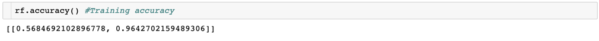
The first parameter shown in the list above is the threshold, and the second value is the accuracy.
To print the F1 Score, you simply need to type the following line of code,
rf.F1()
You will see the output in a list format. First, you will see the threshold, and then the actual value, the same as in the accuracy. You could also specify the threshold inside the parenthesis, that way you use the threshold that you want.
Let's take a look at the first ten predictions in our validation set, and compare it to our first model.
rf.predict(valid)

Both models, GLM and RF, made the same predictions in the first ten predictions. For e.g., the TRUE prediction for the sixth row is the same; there is a different probability, but the prediction is the same.
Again, save the model performance on the validation data
default_rf_per = rf.model_performance(valid)
We will build a default Distributed Random Forest (DRF) model and see how it performs on our validation set. DRF generates a forest of classification or regression trees, rather than a single classification or regression tree. Each of these trees is a weak learner built on a subset of rows and columns. More trees will reduce the variance. Both classification and regression take the average prediction over all of their trees to make a final prediction, whether predicting for a class or numeric value.
To build and train our Random Forest or RF(as we will be referring to from this point on) model, simply run the following code:
# Train a Random Forest
rf <- h2o.randomForest(x = x,
y = y,
training_frame = train,
model_id = "default_rf",
validation_frame = valid,
seed = 42)
Note that we defined the random seed and the model id. You do not need to do this; the model can be built without defining these parameters. The reason for choosing the random seed is for reproducibility purposes, and the model id is to be able to save and retrieve the model easily.
Again, print the summary of your model as we did with the GLM model. You will see the summary of the model with the default settings, and the metrics score on the training and validation data.
Below you will see some of the details from the model we just built.
The AUC and F1 Score reported on the training data are 0.8034 and 0.2620, respectively, and you can see them in the image below.
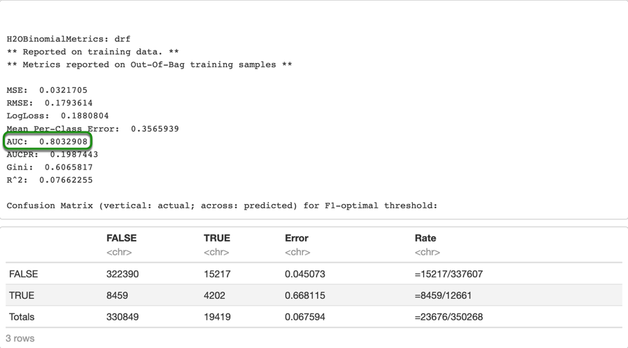
Results from validation data
The AUC and F1 Score reported on the validation data are 0.8265 and 0.2830, respectively.


We will plot the scoring history of our model:
# Plot the scoring history of the Random Forest, using AUC as metric
plot(rf, metric = 'AUC')
You will see a plot similar to the one below

In this case, we see that the RF model is far from overfitting because the training error is still lower than the validation error, and that means that we can probably do some tuning to improve our model.
We can also generate the variable importance plot,
# Plot the variable importance
h2o.varimp_plot(rf)

It is interesting to see that for our RF model, PROPERTY_STATE Is the most important variable, implying that the prediction of whether a loan could be delinquent or not depends on the state where someone is trying to buy that property. The second most important is a more intuitive one, which is the CREDIT_SCORE, as one could expect someone with really good credit to pay their loans fully.
Let's print the accuracy of our RF model (remember that we need to save the model performance first):
# Save the model training performance
train_rf_perf <- h2o.performance(rf, train)
# Print the max Accuracy
h2o.accuracy(train_rf_perf, thresholds = train_rf_perf@metrics$max_criteria_and_metric_scores$threshold[4])
Output
0.9986696
Now, let's look at the validation metrics:
# Save the model performance on the validation set
valid_rf_perf <- h2o.performance(rf, valid)
# Print max accuracy
h2o.accuracy(valid_rf_perf, threshold = valid_rf_perf@metrics$max_criteria_and_metric_scores$threshold[4])
Output
0.9651332
Now, print the validation AUC
# Print AUC
h2o.auc(valid_rf_perf)
Output
0.8265407
# Plot AUC
plot(valid_rf_perf)
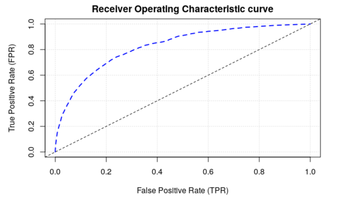
Let's take a look at the first six predictions in our validation set, and compare it to our first model.
# Make predictions on validation set with the Random Forest model
h2o.predict(rf, valid)

Again, you could print more predictions by using h2o.head and adjusting the value of n:
head(h2o.predict(rf, valid), n=10)
Both models, GLM and RF, made the same predictions in the first six predictions. For e.g., the TRUE prediction for the sixth row is the same; there is a different probability, but the prediction is the same.
Let's build an RF model in Flow. Scroll up again to the Assist cell, and click on buildModel

In the select algorithm option, choose Distributed Random Forest, then change the model id to flow_default_rf. Click on the training_frame option and select train. Change nfolds so that it is 5. Choose "DELINQUENT" for your response_column, and for the ignored columns, choose "PREPAYMENT_PENALTY_MORTGAGE_FLAG," "PRODUCT_TYPE," "PREPAID."

Feel free to go over the results the same way we did for our previous model.
Gradient Boosting Machine (for Regression and Classification) is a forward learning ensemble method. H2O's GBM sequentially builds classification trees on all the features of the dataset in a fully distributed way - each tree is built in parallel. H2O's GBM fits consecutive trees where each solves for the net loss of the prior trees. Sometimes GBMs tend to be the best possible models because they are robust and directly optimize the cost function. On the other hand, they tend to overfit, so you need to find the proper stopping point; they are sensitive to noise, and they have several hyper-parameters.
Defining a GBM model is as simple as the other models we have been working with.
gbm = H2OGradientBoostingEstimator(seed = 42,
model_id = 'default_gbm')
%time gbm.train(x = x, y = y, training_frame = train, validation_frame = valid)
Print the model summary
Training metrics:


Validation metrics:


The training and validation AUC are 0.878 and 0.854, respectively. And we obtained a training and validation F1 Scores are 0.343 and 0.30. We can see the that the AUC and F1 Score of our default GBM is better than the values we obtained from our GLM and RF. We will now make the predictions with the GBM model as well.
gbm.predict(valid)

All three models made the same ten predictions, and this gives us an indication of why all three scores are close to each other. Although the sixth prediction is TRUE for all three models, the probability is not exactly the same, but since the thresholds for all three models were low, the predictions were still TRUE.
As we did with the other two models, save the model performance.
default_gbm_per = gbm.model_performance(valid)
Next, we will tune our models and see if we can achieve better performance.
Gradient Boosting Machine (for Regression and Classification) is a forward learning ensemble method. H2O's GBM sequentially builds classification trees on all the features of the dataset in a fully distributed way - each tree is built in parallel. H2O's GBM fits consecutive trees where each solves for the net loss of the prior trees. Sometimes GBMs tend to be the best possible models because they are robust and directly optimize the cost function. On the other hand, they tend to overfit, so you need to find the proper stopping point; they are sensitive to noise, and they have several hyper-parameters.
Defining a GBM model is as simple as the other models we have been working with.
# Train a GBM
gbm <- h2o.gbm(x = x,
y = y,
training_frame = train,
model_id = "default_gbm",
validation_frame = valid,
seed = 42)
Print the model summary
summary(gbm)
Training metrics:
 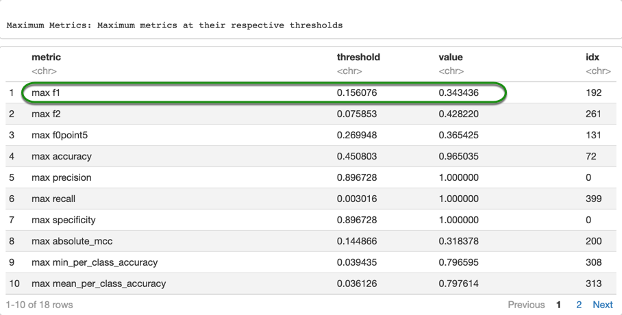
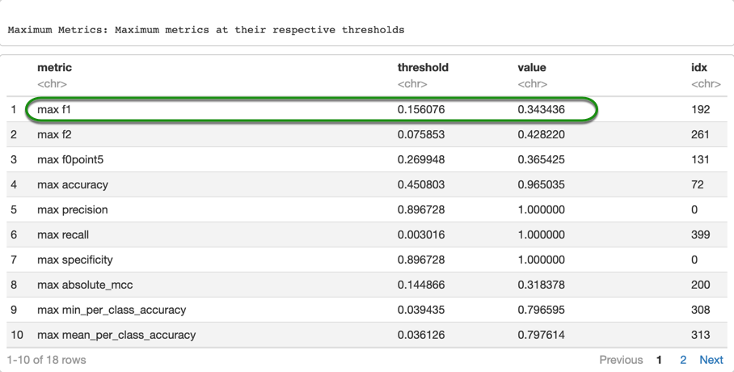
Validation metrics:


The default GBM model had a slightly better performance than the default RF.
We will make the predictions with the GBM model as well.
# Make predictions on validation set with GBM
h2o.predict(gbm, valid)

All three models made the same six predictions, and this gives us an indication of why all three scores are close to each other. Although the sixth prediction is TRUE for all three models, the probability is not exactly the same, but since the thresholds for all three models were low, the predictions were still TRUE.
As we did with the other two models, save the model performance.
valid_gbm_perf <- h2o.performance(gbm, valid)
Next, we will tune our models and see if we can achieve better performance.
Build a GBM in the same way we built a GLM and RF, and we will quickly explore this model. Click on getModels and click on "default_gbm" or just chose the model you just built.

Now scroll down to the scoring history, and you should see a plot like the one below:

From the scoring history, we can see that we can still increase the number of trees, a little bit more, because the validation score is still improving. We will get into more details during the GBM tuning section. Scroll down to the variable importance plot, and take a look at it. Notice how the most important variable is CREDIT_SCORE for the GBM. If you recall, for RF, CREDIT_SCORE was the second most important variable. And the most important variable for RF is the third most important for the GBM.
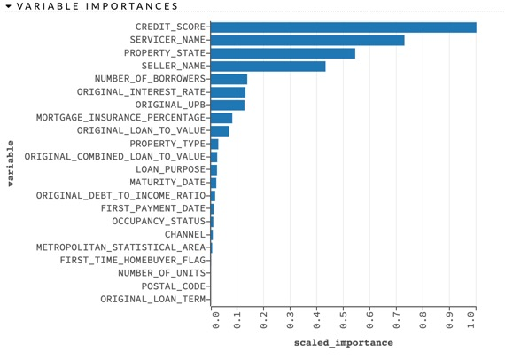
You can continue exploring the results of your GBM model, or go back to the Jupyter Notebook where we will continue.
The default GBM model had a slightly better performance than the default RF.
H2O supports two types of grid search – traditional (or "cartesian") grid search and random grid search. In a cartesian grid search, you specify a set of values for each hyperparameter that you want to search over, and H2O will train a model for every combination of the hyperparameter values. This means that if you have three hyperparameters and you specify 5, 10, and 2 values for each, your grid will contain a total of 5*10*2 = 100 models.
In a random grid search, you specify the hyperparameter space in the exact same way, except H2O will sample uniformly from the set of all possible hyperparameter value combinations. In the random grid search, you also specify a stopping criterion, which controls when the random grid search is completed. You can tell the random grid search to stop by specifying a maximum number of models or the maximum number of seconds allowed for the search. You can also specify a performance-metric-based stopping criterion, which will stop the random grid search when the performance stops improving by a specified amount. Once the grid search is complete, you can query the grid object and sort the models by a particular performance metric (for example, "AUC"). All models are stored in the H2O cluster and are accessible by model id.
To save some time, we will do a random grid search for our GLM model instead of the cartesian search. The H2OGridSearch has 4 parameters, and in order to use it, you need at least three of them. The first parameter for the grid search is the model that you want to tune. Next are your hyperparameters, which needs to be a string of parameters, and a list of values to be explored by grid search. The third one is optional, which is the grid id, and if you do not specify one, an id will automatically be generated. Lastly, the fourth parameter is the search criteria, where you can specify if you want to do a cartesian or random search.
We will explore two ways of defining your grid search, and you can use the way you prefer. One way is to define all at once in the grid search (as we will do it for the GLM). The second way is to define every parameter separately. For example, define your model, your hyper-parameters, and your search criteria, and just add that to your grid search once you are ready.
For our GLM, we will tune alpha, and missing_values_handling. We could try to tune lambda but we will just use lambda_search = True so that this value is tuned automatically. The other parameters that you could change, such as solver, max_active_predictors, and nlambdas, to mention a few, are not supported by H2OGridSearch.
1. alpha: is the distribution of regularization between the L1 (Lasso) and L2 (Ridge) penalties. A value of 1 for alpha represents Lasso regression, a value of 0 produces Ridge regression, and anything in between specifies the amount of mixing between the two. For alpha, we can explore the range from 0 to 1 in steps of 0.01
2. lambda: is the regularization strength.
3. missing_values_handling: This parameter allows us to specify how we want to handle any missing data (Options are skip and MeanImputation)
The grid search is shown below:
glm_grid = h2o.grid.H2OGridSearch (
H2OGeneralizedLinearEstimator(family = "binomial",
lambda_search = True),
hyper_params = {"alpha": [x*0.01 for x in range(0, 100)],
"missing_values_handling" : ["Skip", "MeanImputation"]},
grid_id = "glm_random_grid",
search_criteria = {
"strategy":"RandomDiscrete",
"max_models":300,
"max_runtime_secs":300,
"seed":42})
%time glm_grid.train(x = x, y = y, training_frame = train, validation_frame = valid)
You can easily see all four parameters of our grid search in the code sample above. We defined our GLM model the same way we did before. Then, we take care of the hyper-parameters and notice that we have used a for loop for the range of alpha in order to cover more possible values. Because the number of possible models in our search criteria could take a long time to finish, we specify that we want a maximum number of 100 models, or that the grid search runs for only 300 seconds, or 5 minutes.
Print the models in descending order, sorted by the AUC. By default, the grid search will return the best models based on the logloss. Therefore, in order to get the best model based on the AUC, we need to specify that we want to sort the models by AUC. You can change this to other metrics, depending on what you are looking for.
sorted_glm_grid = glm_grid.get_grid(sort_by = 'auc', decreasing = True)
sorted_glm_grid.sorted_metric_table()


With the sample code above, you will get the models that were created with their respective parameters, model id, and AUC. As you can see, the grid search trained 38 models in five minutes. The AUC did improve, and we will compare it with¬ the AUC from our default model later.
After looking at the grid search from Flow, let's explore the best model obtained from our grid search in our Jupyter Notebook. Retrieve the best model and print the model summary with the following code:
tuned_glm = sorted_glm_grid.models[0]
tuned_glm.summary()

With the first line of code, we are retrieving the best model from the grid search, and the second line of code will print the parameters used for the best model found by the grid search. We will make a quick comparison between the performance of the default glm model and the best model from the grid search.
First, evaluate the model performance on the validation set.
tuned_glm_perf = tuned_glm.model_performance(valid)
Now, print the AUC for the default, and the tuned model.
print("Default GLM AUC: %.4f \nTuned GLM AUC:%.4f" % (default_glm_perf.auc(), tuned_glm_perf.auc()))
Output:
Default GLM AUC: 0.8450
Tuned GLM AUC:0.8534
The AUC slightly improved. We did not expect the GLM model to perform great, or to have a great improvement with the grid search, as it is just a linear model, and in order to perform well, we would need a linear distribution of our data and response variable; however, we were able to get a minor improvement from the default score.
We can also print the F1 Score
print ("Default GLM F1 Score:", default_glm_perf.F1())
print ("Tuned GLM F1 Score", tuned_glm_perf.F1())
Output:
Default GLM F1 Score: [[0.1223956407234934, 0.28271823505379273]]
Tuned GLM F1 Score [[0.1260471303106269, 0.28253908457336596]]
The max F1 Score did not really improvement. Although the threshold slightly increased, it did not improve the overall F1 Score. Let's take a look at the confusion matrix to see if the values changed.
print ("Default GLM: ", default_glm_perf.confusion_matrix())
print ("Tuned GLM: ", tuned_glm_perf.confusion_matrix())

Notice how the overall error slightly improved, as well as the error for the FALSE class. While the error for the TRUE class had minimal increase, meaning the model is classifying a few more samples that are actually TRUE incorrectly. We see that our model has a hard time classifying the TRUE labels, and this is due to the highly imbalanced dataset that we are working with.
We will do the test evaluation after we tune our other two models.
H2O supports two types of grid search – traditional (or "cartesian") grid search and random grid search. In a cartesian grid search, you specify a set of values for each hyperparameter that you want to search over, and H2O will train a model for every combination of the hyperparameter values. This means that if you have three hyperparameters and you specify 5, 10, and 2 values for each, your grid will contain a total of 5*10*2 = 100 models.
In a random grid search, you specify the hyperparameter space in the exact same way, except H2O will sample uniformly from the set of all possible hyperparameter value combinations. In the random grid search, you also specify a stopping criterion, which controls when the random grid search is completed. You can tell the random grid search to stop by specifying a maximum number of models or the maximum number of seconds allowed for the search. You can also specify a performance-metric-based stopping criterion, which will stop the random grid search when the performance stops improving by a specified amount. Once the grid search is complete, you can query the grid object and sort the models by a particular performance metric (for example, "AUC"). All models are stored in the H2O cluster and are accessible by model id.
To save some time, we will do a random grid search for our GLM model instead of the cartesian search. The H2OGridSearch has 4 parameters, and in order to use it, you need at least three of them. The first parameter for the grid search is the model that you want to tune. Next are your hyperparameters, which needs to be a string of parameters, and a list of values to be explored by grid search. The third one is optional, which is the grid id, and if you do not specify one, an id will automatically be generated. Lastly, the fourth parameter is the search criteria, where you can specify if you want to do a cartesian or random search.
For our GLM, we will tune alpha, and missing_values_handling. We could try to tune lambda but we will just use lambda_search = True so that this value is tuned automatically. The other parameters that you could change, such as solver, max_active_predictors, and nlambdas, to mention a few, are not supported by H2OGridSearch.
1. alpha is the distribution of regularization between the L1 (Lasso) and L2 (Ridge) penalties. A value of 1 for alpha represents Lasso regression, a value of 0 produces Ridge regression, and anything in between specifies the amount of mixing between the two. For alpha, we can explore the range from 0 to 1 in steps of 0.01
2. lambda, is the regularization strength.
3. missing_values_handling This parameter allows us to specify how we want to handle any missing data (Options are skip and MeanImputation)
The grid search is shown below:
# Create a sequence to have a wide range of values for alpha
glm_alpha <- seq(from = 0, to = 1, by = 0.01)
# Set up grid search
glm_grid <- h2o.grid(algorithm = "glm",
family = "binomial",
grid_id = "random_glm_grid",
lambda_search = TRUE,
seed = 42,
x = x,
y = y,
training_frame = train,
validation_frame = valid,
hyper_params = list(
alpha = glm_alpha,
missing_values_handling = c("MeanImputation", "Skip")),
search_criteria = list(
strategy = "RandomDiscrete",
max_runtime_secs = 300,
seed = 42))
Notice that we have used a sequence from 0 to 1 in steps of 0.01 for the range of alpha in order to cover more possible values. Because the number of possible models in our search criteria could take a long time to finish, we specify that we want a maximum number of 100 models, or that the grid search runs for only 300 seconds, or 5 minutes.
Print the models in descending order, sorted by the AUC. By default, the grid search will return the best models based on the logloss. Therefore, in order to get the best model based on the AUC, we need to specify that we want to sort the models by AUC. You can change this to other metrics, depending on what you are looking for.
# Save the grid search sorted by AUC in decreasing order
gml_grid_auc <- h2o.getGrid(grid_id = "random_glm_grid", sort_by = "auc", decreasing = TRUE)
# Print the results for grid search
as.data.frame(gml_grid_auc@summary_table)

To look at the rest of the models, just click "Next" at the bottom of the table.
With the sample code above, you will get the models that were created with their respective parameters, model id, and AUC. As you can see, the grid search trained 38 models in five minutes. The AUC did improve, and we will compare it to the AUC from our default model later.
Let's explore the best model obtained from our grid search. Save the best model and print the model summary with the following code:
# Retrieve the best model from the grid search
tuned_glm <- h2o.getModel(gml_grid_auc@model_ids[[1]])
# Print the results of the best model
tuned_glm

With the first line of code, we are retrieving the best model from the grid search, and the second line of code will print the parameters used for the best model found by the grid search. We will make a quick comparison between the performance of the default glm model and the best model from the grid search.
First, evaluate the model performance on the validation set.
# Save the performance on validation data from the best model
valid_tuned_glm_perf <- h2o.performance(tuned_glm, valid)
Now, print the validation AUC for the default, and the tuned model.
# Print the AUC for default and tuned model
h2o.auc(valid_glm_perf)
#tuned model performance
h2o.auc(valid_tuned_glm_perf)
Output:
0.8449582
0.8534529
The AUC slightly improved. We did not expect the GLM model to perform great, or to have a great improvement with the grid search, as it is just a linear model, and in order to perform well, we would need a linear distribution of our data and response variable; however, we were able to get a minor improvement from the default score.
We can also print the F1 Score
# Print max F1 scores for default and tuned models
h2o.F1(valid_glm_perf, thresholds = valid_glm_perf@metrics$max_criteria_and_metric_scores$threshold[1])
# Tuned model F1
h2o.F1(valid_tuned_glm_perf, thresholds = valid_tuned_glm_perf@metrics$max_criteria_and_metric_scores$threshold[1])
Output:
0.2827182
0.2821234
The max F1 Score did not have an improvement. Let's take a look at the confusion matrix to try to understand the reason of why the F1 did not improve.
# Print the confusion matrix for default and tuned models
h2o.confusionMatrix(valid_glm_perf)
h2o.confusionMatrix(valid_tuned_glm_perf)


In this case it is difficult to compare the errors, as the tuned model is using less samples; this is a known issue that will be addressed in future releases. However, we can see that the error for the TRUE class had minimal improvement, meaning the model is classifying a few more samples that are actually TRUE correctly. We see that our model has a hard time classifying the TRUE labels, and this is due to the highly imbalanced dataset that we are working with.
We will do the test evaluation after we tune our other two models.
Next, we will do a grid search for a GLM in Flow. Using a grid search in Flow is as easy as just clicking some boxes and adding some numbers. Go to the Assist cell again and click on buildModel, and select Generalized Linear Modeling for the algorithm. Repeat the same process as before, when you built the default GLM model. For model id, just use glm. type 5 for nfolds, and set the random seed to 42. Again, choose DELINQUENT for your response_column, and for the ignored columns, choose PREPAYMENT_PENALTY_MORTGAGE_FLAG, PRODUCT_TYPE, PREPAID. Lastly, choose binomial for family. But this time, don't click on Build Model yet.
Now, every time you build a model, you are given the option to select the grid option, as shown in the image below. For the parameters shown in the image below, just leave them how they are.

Scroll down to the alpha and lambda parameters and check the boxes next to them and add the list of numbers shown in the image below. In this case we don't have to check the box for lambda_search because we already defined a range to do a grid search, but if you didn't have any values for it, then you could just check the lambda_search box as shown in the image below, and this would be equivalent to what we did in the Jupyter Notebook. And now just check the standardize box so that numeric columns have zero variance.

Lastly, for the Grid Settings, make sure your settings look similar to the ones in the image below. You will need to change the Grid ID, Strategy, Max Models, Max Runtime, and Stopping Metric.

Once you have updated the settings, click on Build Model. When the model is done, click on View, and you will see the list of your models. The top model will be the model with the best AUC score. Click on it and explore the results. Our best model yielded to a validation AUC score of 0.8548, and our ROC curve is shown below.

We will do the grid search a bit differently this time. We are going to define each parameter of the grid search separately, and then pass the variables to the grid search function.
We will first find one of the most important parameters for an RF, which is the maximum depth.
max_depth defines the number of nodes along the longest path from the start of the tree to the farthest leaf node. Higher values will make the model more complex and can lead to overfitting. Setting this value to 0 specifies no limit. This value defaults to 20. We will first look for the best value for the max_depth; this would save us some computational time when we tune the other parameters. As we mentioned before, we will use a slightly different approach for the grid search. We are going to instantiate each parameter for the grid search, and then pass each one into it.
#Grid Search Parameters
hyper_parameters = {'max_depth':[1, 3, 5, 6, 7, 8, 9, 10, 12, 13, 15, 20, 25, 35]}
rf = H2ORandomForestEstimator(seed = 42,
stopping_rounds = 5,
stopping_tolerance = 1e-4,
stopping_metric = "auc",
model_id = 'rf')
grid_id = 'depth_grid'
search_criteria = {'strategy': "Cartesian"}
#Grid Search
rf_grid = H2OGridSearch(model = rf,
hyper_params = hyper_parameters,
grid_id = grid_id,
search_criteria = search_criteria)
%time rf_grid.train(x = x, y = y, training_frame = train, validation_frame = valid)
We are doing a cartesian search of values for max_depth to see if the default value is good, or if we need to adjust the value. After it is done training, print the models sorted by AUC.
sorted_rf_depth = rf_grid.get_grid(sort_by = 'auc',decreasing = True)
sorted_rf_depth.sorted_metric_table()

Now that we have a found the max_depth values that yield the best results, we will do a random grid search using the top five values for max_depth and we will also try to tune our sample_rate
sample_rate: Specifies the row sampling rate (x-axis). (Note that this method is sample without replacement.) The range is 0.0 to 1.0, and this value defaults to 0.6320000291. Higher values may improve training accuracy. Test accuracy improves when either columns or rows are sampled.
Another important parameter that we could tune is the number of trees (ntrees).
ntrees: specifies the number of trees that you want your RF to have. When tuning the number of trees, you need to be careful because when you have too many trees, your model will tend to overfit. That's why it's always advised to use cross-validation, and never tune models based on training scores.
We won't do a grid search for a maximum number of trees. We will use 500 trees for our grid search model while using early stopping; that way, if the model doesn't improve, it will automatically stop. By doing this, we will be obtaining the best value for ntrees without having to do an extra grid search.
H2O scores our models regularly against our validation set, and so we can use early stopping to stop training the model once our specified metric no longer improves. In order to use early stopping, we need to define the next three parameters:
1. stopping_rounds: this is used to stop model training when the option selected for stopping_metric doesn't improve for this specified number of training rounds, based on a simple moving average.
2. stopping_tolerance: This option specifies the tolerance value by which a model must improve before training ceases.
3. stopping_metric: specifies the metric that decides if the model is improving or not. In our case, since we are looking at a classification problem, we will use AUC.
The grid search discussed above looks like the following:
hyper_parameters = {"max_depth":[8, 9, 10, 11, 12],
'sample_rate': [x/100. for x in range(20,101)]}
rf = H2ORandomForestEstimator(ntrees = 500,
seed = 42,
stopping_rounds = 5,
stopping_tolerance = 1e-3,
stopping_metric = "auc",
model_id = 'rf_grid')
grid_id = 'rf_random_grid'
search_criteria = {"strategy":"RandomDiscrete",
"max_models":100,
"max_runtime_secs":900,
"seed":42}
rf_grid = H2OGridSearch(model = rf,
hyper_params = hyper_parameters,
grid_id = grid_id,
search_criteria = search_criteria)
%time rf_grid.train(x = x, y = y, training_frame = train, validation_frame = valid)
Print the grid results as follow
sorted_rf = rf_grid.get_grid(sort_by = 'auc', decreasing = True)
sorted_rf.sorted_metric_table()

The reason we do a two-step approach to tune the RF model is that when you have large values for max_depth and ntrees your model will take a long time to train and we could be wasting computational time. For example, say we decided to do just one grid search, and we have max_depth=35 and ntrees=500, and our grid search actually chooses to train that model, it would take a long time to train, and based on our results, the score wouldn't be good. That's why we narrow down the range for max_depth and then do a local search with the top values. And as you can see from our results, even though in our first grid search max_depth=12 was the second best value, when we combined that with another parameter, we see that max_depth=12 yields better results that max_depth=10.
Check some of the outputs that we obtained from our tuned model.
tuned_rf = sorted_rf.models[0]
Print the validation AUC:
tuned_rf_per = tuned_rf.model_performance(valid)
tuned_rf_per.auc()
Output:
0.8534983625079324
And the F1 Score
tuned_rf_per.F1()
Output:
[[0.139789068847687, 0.3087649402390439]]
The AUC from the validation data was 0.8532, and the F1 Score was 0.3105
Let's compare the tuned model with the default model.
print("Default RF AUC: %.4f \nTuned RF AUC:%.4f" % (default_rf_per.auc(), tuned_rf_per.auc()))
Output:
Default RF AUC: 0.8265
Tuned RF AUC:0.8535
The AUC value for our RF model had a decent improvement by tuning max_depth and the sample_rate while using ntrees = 500 with early stopping. We will check the F1 score to see how it compares to the F1 of our default model.
print("Default RF F1 Score:", default_rf_per.F1())
print("Tuned RF F1 Score:", tuned_rf_per.F1())
Default RF F1 Score: [[0.18697332295716976, 0.2830355563417654]]
Tuned RF F1 Score: [[0.139789068847687, 0.3087649402390439]]
The F1 score also improved. Although the F1 score is still considered low, we will look at the confusion matrix, and we will see how this improvement reflects on the confusion matrix
print ("Default RF: ", default_rf_per.confusion_matrix())
print ("Tuned RF: ", tuned_rf_per.confusion_matrix())

The AUC for our tuned model actually improved, as well as the F1 Score. From the confusion matrix, we can see that the new model is predicting fewer FALSE labels that are actually FALSE; this means the model is classifying more FALSE labels incorrectly. However, the error is very small and this can still be accepted. On the other side, we can see that our model started to correclty classify more TRUE labels. Remember that we have a highly imbalanced dataset, and with the quick grid search we were able to improve the missclassification error for the minority class.
Now, we will see if we can improve our GBM model.
We will first find one of the most important parameters for an RF, which is the maximum depth.
max_depth defines the number of nodes along the longest path from the start of the tree to the farthest leaf node. Higher values will make the model more complex and can lead to overfitting. Setting this value to 0 specifies no limit. This value defaults to 20. We will first look for the best value for the max_depth; this would save us some computational time when we tune the other parameters. As we mentioned before, we will use a slightly different approach for the grid search. We are going to instantiate each parameter for the grid search, and then pass each one into it.
# Set-up grid search for Random Forest
rf_depth_grid <- h2o.grid(algorithm = "randomForest",
grid_id = "rf_depth_grid",
seed = 42,
stopping_rounds = 5,
stopping_metric = "AUC",
stopping_tolerance = 1e-4,
x = x,
y = y,
training_frame = train,
validation_frame = valid,
hyper_params = list(
max_depth = c(1, 3, 5, 6, 7, 8, 9, 10, 12, 13, 15, 20, 25, 35)),
search_criteria = list(
strategy = "Cartesian"))
We are doing a cartesian search of values for max_depth to see if the default value is good, or if we need to adjust the value. After it is done training, print the models sorted by AUC.
# Retrieve the grid search results
rf_depth_grid_auc <- h2o.getGrid(grid_id = "rf_depth_grid", sort_by = "auc", decreasing = TRUE)
as.data.frame(rf_depth_grid_auc@summary_table)

Now that we have a found the max_depth values that yield the best results, we will do a random grid search using the top five values for max_depth and we will also try to tune our sample_rate
sample_rate: Specifies the row sampling rate (x-axis). (Note that this method is sample without replacement.) The range is 0.0 to 1.0, and this value defaults to 0.6320000291. Higher values may improve training accuracy. Test accuracy improves when either columns or rows are sampled.
Another important parameter that we could tune is the number of trees (ntrees).
ntrees: specifies the number of trees that you want your RF to have. When tuning the number of trees, you need to be careful because when you have too many trees, your model will tend to overfit. That's why it's always advised to use cross-validation, and never tune models based on training scores.
We won't do a grid search for a maximum number of trees. We will use 500 trees for our grid search model while using early stopping; that way, if the model doesn't improve, it will automatically stop. By doing this, we will be obtaining the best value for ntrees without having to do an extra grid search.
H2O scores our models regularly against our validation set, and so we can use early stopping to stop training the model once our specified metric no longer improves. In order to use early stopping, we need to define the next three parameters:
1. stopping_rounds: this is used to stop model training when the option selected for stopping_metric doesn't improve for this specified number of training rounds, based on a simple moving average.
2. stopping_tolerance: This option specifies the tolerance value by which a model must improve before training ceases.
3. stopping_metric: specifies the metric that decides if the model is improving or not. In our case, since we are looking at a classification problem, we will use AUC.
The grid search discussed above looks like the following:
# Create a sequence for sample rate
rf_sample_rate <- seq(from = 0.2, to = 1, by = 0.01)
rf_random_grid <- h2o.grid(algorithm = "randomForest",
grid_id = "rf_random_search",
ntrees = 500,
seed = 42,
stopping_rounds = 5,
stopping_metric = "AUC",
stopping_tolerance = 1e-3,
x = x,
y = y,
training_frame = train,
validation_frame = valid,
hyper_params = list(
max_depth = c(8, 9, 10, 11, 12),
sample_rate = rf_sample_rate),
search_criteria = list(
strategy = "RandomDiscrete",
max_runtime_secs = 900,
seed = 42))
Print the grid results as follow
# Retrieve and print grif search results
rf_random_grid_auc <- h2o.getGrid(grid_id = "rf_random_search", sort_by = "auc", decreasing = TRUE)
as.data.frame(rf_random_grid_auc@summary_table)

The reason we do a two-step approach to tune the RF model is that when you have large values for max_depth and ntrees your model will take a long time to train and we could be wasting computational time. For example, say we decided to do just one grid search, and we have max_depth = 35 and ntrees = 500, and our grid search actually chooses to train that model, it would take a long time to train, and based on our results, the score wouldn't be good. That's why we narrow down the range for max_depth and then do a local search with the top values. And as you can see from our results, even though in our first grid search max_depth = 10 was the best value, when we combined that with another parameter, we see that max_depth = 10 is no longer the best depth.
Save the model performance on the validation set.
# Get the best model and print the results
tuned_rf <- h2o.getModel(rf_random_grid_auc@model_ids[[1]]) #getting the best model
# Save the validation performance of the tuned RF
valid_tuned_rf_perf <- h2o.performance(tuned_rf, valid)
Now we can print the validation AUC and F1 score
# Print AUC and max F1 of the tuned model
h2o.auc(valid_tuned_rf_perf)
h2o.F1(valid_tuned_rf_perf, thresholds = valid_tuned_rf_perf@metrics$max_criteria_and_metric_scores$threshold[1])
Output:
0.8531042
0.3063956
The AUC from the validation data was 0.8531, and the F1 Score was 0.3064
Let's print the validation AUC and the F1 from our default model
# Print the AUC and max F1 of the Default model
h2o.auc(valid_rf_perf)
h2o.F1(valid_rf_perf, thresholds = valid_rf_perf@metrics$max_criteria_and_metric_scores$threshold[1])
Output:
0.8265407
0.2830356
The AUC value for our RF model had a decent improvement by tuning max_depth and the sample_rate while using ntrees = 500 with early stopping. The F1 score also ahd a significant improvement. Although the F1 score is still considered low, we will look at the confusion matrix, and we will see how this improvement reflects on the confusion matrix
# Print confusion matrix of the tuned model and the default model
h2o.confusionMatrix(valid_tuned_rf_perf)
h2o.confusionMatrix(valid_rf_perf)


The AUC for our tuned model actually improved, as well as the F1 Score. From the confusion matrix, we can see that the new model is predicting more TRUE labels that are actually TRUE; this means the model is classifying more TRUE labels correctly. On the other side, we can see that our model started to incorreclty classify more FALSE labels. Remember that we have a highly imbalanced dataset, and with the quick grid search we were able to improve the missclassification error for the minority class.
Now, we will see if we can improve our GBM model.
To do the grid search for the RF model in Flow, start by building another default RF model the same way we did in Task 5. But this time, check the Grid checkbox next to max_depth and add the list of the hyper-parameters that you want. For example, for max_depth you can do 1; 5; 10; 12; 15; 20; 50; You can do the same with other parameters that you would like to tune. After you click on build, your grid search for your RF will start. You can even use values closest to the one we obtained in the Jupyter Notebook or RStudio to see if you can get an even better score! Explore the results on your own, and see if the results make sense.
We will tune our GBM model using the same approach we used for the RF. We will first find a good range for max_depth and then we will try to tune some other parameters. For a GBM model, conceptually speaking, the max_depth and ntrees are similar to the RF model. However, we will see that the values are smaller than the ones used for the RF.
hyper_params = {'max_depth' : [3, 4, 5, 6, 7, 8, 9, 10, 12, 13, 15]}
gbm = H2OGradientBoostingEstimator(model_id = 'grid_gbm',
ntrees = 50,
seed = 42)
gbm_grid = H2OGridSearch(gbm, hyper_params,
grid_id = 'depth_gbm_grid',
search_criteria = {"strategy":"Cartesian"})
%time gbm_grid.train(x = x, y = y, training_frame = train, validation_frame = valid)
Print the models
sorted_gbm_depth = gbm_grid.get_grid(sort_by = 'auc', decreasing = True)
sorted_gbm_depth.sorted_metric_table()

Based on the grid search that we just did, the best max_depth is 6, but we will use the top 5 values for our next grid search. We will do a random grid search with a few parameters to see if we can get a better score.
Note: The search criteria will only allow the grid search to run for 15 minutes, if you would like to see the results of running it for longer, just increase the max_runtime_secs to a higher value and wait for the results.
Here is the list of parameters that we are going to try to tune
1. sample_rate: Specify the row sampling rate (x-axis). (Note that this method is sample without replacement.) The range is 0.0 to 1.0, and this value defaults to 1. Higher values may improve training accuracy. Test accuracy improves when either columns or rows are sampled.
2. col_sample_rate: Specify the column sampling rate (y-axis). (Note that this method is sampling without replacement.) The range is 0.0 to 1.0.
3. col_sample_rate_per_tree: Specify the column sample rate per tree. This can be a value from 0.0 to 1.0 and defaults to 1. Note that it is multiplicative with col_sample_rate, so setting both parameters to 0.8, for example, results in 64% of columns being considered at any given node to split.
4. col_sample_rate_change_per_level: This option specifies to change the column sampling rate as a function of the depth in the tree.
Find more parameters and more information about them at the Documentation - GBM Section and also the Python Module
gbm = H2OGradientBoostingEstimator(ntrees = 500,
learn_rate = 0.05,
seed = 42,
model_id = 'grid_gbm')
hyper_params_tune = {'max_depth' : [4, 5, 6, 7, 8],
'sample_rate': [x/100. for x in range(20,101)],
'col_sample_rate' : [x/100. for x in range(20,101)],
'col_sample_rate_per_tree': [x/100. for x in range(20,101)],
'col_sample_rate_change_per_level': [x/100. for x in range(90,111)]}
search_criteria_tune = {'strategy': "RandomDiscrete",
'max_runtime_secs': 900,
'max_models': 100, ## build no more than 100 models
'seed' : 42}
random_grid = H2OGridSearch(model = gbm, hyper_params = hyper_params_tune,
grid_id = 'random_grid',
search_criteria = search_criteria_tune)
%time random_grid.train(x = x, y = y, training_frame = train, validation_frame = valid)
Print the results
sorted_random_search = random_grid.get_grid(sort_by = 'auc',decreasing = True)
sorted_random_search.sorted_metric_table()


With the quick random grid search that we just performed we were able to improve the AUC value to 0.8621. Note that since the combination of possible models is so large, we could run the grid search for much longer to see if there are models that further improve the AUC. For the purpose of this self-paced course, we will leave it at that, but feel free to modify the grid search, try to use a narrower range for the parameters based on the values we found, and run the grid search for a longer period of time and see if you can get a much better model than the one we just found.
We will now print the AUC and F1 scores to see how the model performed:
tuned_gbm = sorted_random_search.models[0]
tuned_gbm_per = tuned_gbm.model_performance(valid)
print(tuned_gbm_per.auc())
print(tuned_gbm_per.F1())
Output:
0.8620868754474125
[[0.16371106543078953, 0.31935320869125816]]
We were able to get the highest validation AUC among the three models with our GBM. The model reached a 0.8621 AUC, while also improving the F1 to 0.3194.
Let's take a look at the confusion matrix and see how are the misclassification errors from this model look like:
tuned_gbm_per.confusion_matrix()
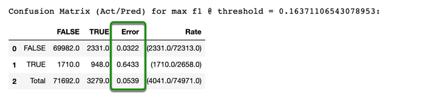
Even though the misclassification error for the TRUE class improved, the error for the FALSE class and the overall error did not improve. However, with the tuning that we did, our GBM model was able to make more correct predictions for the TRUE class, which is good since we are dealing with a highly imbalanced dataset.
Here is how you can compare the AUC from the default model with the tuned model:
print("Default GBM AUC: %.4f \nTuned GBM AUC:%.4f" % (default_gbm_per.auc(), tuned_gbm_per.auc()))
Output:
Default GBM AUC: 0.8541
Tuned GBM AUC:0.8621
If you go to your Flow instance, you can check your best model. See the results for yourself and compare it to the results that we obtained from the default model. You can also look at the Variable importance plot. The variable importance plot seems very similar to the one we obtained for the default GBM model, except for the 5th predictor, which has changed. You can also look at the confusion matrix on both training and validation data.
We will do the final test performance next.
We will tune our GBM model using the same approach we used for the RF. We will first find a good range for max_depth and then we will try to tune some other parameters. For a GBM model, conceptually speaking, the max_depth and ntrees are similar to the RF model. However, we will see that the values are smaller than the ones used for the RF.
gbm_depth_grid <- h2o.grid(algorithm = "gbm",
grid_id = "gbm_depth_grid",
seed = 42,
stopping_rounds = 5,
stopping_metric = "AUC",
stopping_tolerance = 1e-4,
x = x,
y = y,
training_frame = train,
validation_frame = valid,
hyper_params = list(
max_depth = c(3,4,5,6,7,8,9,10,12,13,15)),
search_criteria = list(
strategy = "Cartesian"))
Print the models from the grid search
# Retrieve and print the results of the grid search
gbm_depth_grid_auc <- h2o.getGrid(grid_id = "gbm_depth_grid", sort_by = "auc", decreasing = TRUE)
as.data.frame(gbm_depth_grid_auc@summary_table)

Based on the grid search that we just did, the best max_depth is 6, but we will use the top 5 values for our next grid search. We will do a random grid search with a few parameters to see if we can get a better score.
Note: The search criteria will only allow the grid search to run for 15 minutes, if you would like to see the results of running it for longer, just increase the max_runtime_secs to a higher value and wait for the results.
Here is the list of parameters that we are going to try to tune
1. sample_rate: Specify the row sampling rate (x-axis). (Note that this method is sample without replacement.) The range is 0.0 to 1.0, and this value defaults to 1. Higher values may improve training accuracy. Test accuracy improves when either columns or rows are sampled.
2. col_sample_rate: Specify the column sampling rate (y-axis). (Note that this method is sampling without replacement.) The range is 0.0 to 1.0.
3. col_sample_rate_per_tree: Specify the column sample rate per tree. This can be a value from 0.0 to 1.0 and defaults to 1. Note that it is multiplicative with col_sample_rate, so setting both parameters to 0.8, for example, results in 64% of columns being considered at any given node to split.
4. col_sample_rate_change_per_level: This option specifies to change the column sampling rate as a function of the depth in the tree.
Find more parameters and more information about them at the Documentation - GBM Section and also the Python Module
# Create sequences for 4 different parameters in order to explore more models
gbm_sample_rate <- seq(from = 0.2, to = 1, by = 0.01)
gbm_col_sample_rate <- seq(from = 0.2, to = 1, by = 0.01)
gbm_col_sample_rate_per_tree <- seq(from = 0.2, to = 1, by = 0.01)
gbm_col_sample_rate_change_per_level <- seq(from = 0.9, to = 1.1, by = 0.01)
gbm_random_grid_2 <- h2o.grid(algorithm = "gbm",
grid_id = "gbm_random_search",
ntrees = 500,
learn_rate = 0.05,
seed = 42,
stopping_rounds = 5,
stopping_metric = "AUC",
stopping_tolerance = 1e-3,
x = x,
y = y,
training_frame = train,
validation_frame = valid,
hyper_params = list(
max_depth = c(4, 5, 6, 7, 8),
sample_rate = gbm_sample_rate,
col_sample_rate = gbm_col_sample_rate,
col_sample_rate_per_tree = gbm_col_sample_rate_per_tree,
col_sample_rate_change_per_level = gbm_col_sample_rate_change_per_level),
search_criteria = list(
strategy = "RandomDiscrete",
max_runtime_secs = 900,
seed = 42))
Print the results
# Retrieve and print the grid search results
gbm_random_grid_auc <- h2o.getGrid(grid_id = "gbm_random_search", sort_by = "auc", decreasing = TRUE)
as.data.frame(gbm_random_grid_auc@summary_table)

Things to Note
1. Check the other parameters tuned in this grid search.
2. Next button to look at the other models trained in this grid search.
With the quick random grid search that we just performed we were able to improve the AUC value to 0.8614. Note that since the combination of possible models is so large, we could run the grid search for much longer to see if there are models that further improve the AUC. For the purpose of this self-paced course, we will leave it at that, but feel free to modify the grid search, try to use a narrower range for the parameters based on the values we found, and run the grid search for a longer period of time and see if you can get a much better model than the one we just found.
We will now retrieve the best model, save the model performance, and print the AUC and F1 scores to see how the model performed:
# Retrieve the best model and print the results
tuned_gbm <- h2o.getModel(gbm_random_grid_auc@model_ids[[1]])
# Save the validation performance of the tuned model
valid_tuned_gbm_perf <- h2o.performance(tuned_gbm, valid)
# Print validation AUC of the tuned model
h2o.auc(valid_tuned_gbm_perf)
# Print the validation max F1 value of the tuned model
h2o.F1(valid_tuned_gbm_perf, thresholds = valid_tuned_gbm_perf@metrics$max_criteria_and_metric_scores$threshold[1])
Output:
0.8614229
0.317029
We were able to get the highest validation AUC among the three models with our GBM. The model reached a 0.8614 AUC, while also improving the F1 to 0.3170.
If you want to compared the results from the tuned model with the results from the default model, you can print the metrics from the default model:
# Print validation AUC and max F1 of default model
h2o.auc(valid_gbm_perf)
h2o.F1(valid_gbm_perf, thresholds = valid_gbm_perf@metrics$max_criteria_and_metric_scores$threshold[1])
Output
0.8541171
0.2997851
Let's take a look at the confusion matrices for both the tuned model and default model to compare their misclassification errors:
# Compare the confusion matrix of the tuned and default model
h2o.confusionMatrix(valid_tuned_gbm_perf)
h2o.confusionMatrix(valid_gbm_perf)


Even though the misclassification error for the TRUE class did improve, the error for the FALSE class and the overall error did not. However, with the tuning that we did, our GBM model was able to make more correct predictions for TRUE class, which, in our case is very good because of how imbalanced our dataset is.
We will do the final test performance next.
We are going to obtain the test performance of each of the best models. If you named your models the same as in this self-paced course, then you should be able to just run the following code. Notice that we are just taking the best models and checking the model performance with the test set.
glm_test_per = tuned_glm.model_performance(test)
rf_test_per = tuned_rf.model_performance(test)
gbm_test_per = tuned_gbm.model_performance(test)
You can now print any performance metric that you would like. Right now, we will just focus on the AUC, F1 Score, and the misclassification error from the confusion matrix.
Print the test AUC of each model.
print("GLM Test AUC: %.4f \nRF Test AUC: %.4f \nGBM Test AUC: %.4f " %
(glm_test_per.auc(), rf_test_per.auc(), gbm_test_per.auc()))
Output:
GLM Test AUC: 0.8549
RF Test AUC: 0.8569
GBM Test AUC: 0.8646
We were able to improve the AUC of all three models with the quick grid search that we did for all three models. We saw the greatest improvement with the RF model, as the default parameters were a little off from what we found to be good. All three AUC test scores are slightly higher than the validation scores but close enough to trust the validation score to tune all our models. And as it could be expected, the GBM had the best AUC, followed by the RF and, lastly, the GLM.
Now print the F1 Score for each model,
print ("GLM Test F1 Score: ", glm_test_per.F1())
print ("RF Test F1 Score: ", rf_test_per.F1())
print ("GBM Test F1 Score: ", gbm_test_per.F1())
Output:
GLM Test F1 Score: [[0.14371321518995825, 0.2863113897596656]]
RF Test F1 Score: [[0.1314232895341578, 0.29571865443425077]]
GBM Test F1 Score: [[0.15359908262968297, 0.30752071383046525]]
All three F1 scores slightly improved compared to the default value, and are very close to the validation scores. Now, and we will see shortly how that is reflected in the misclassification error. On the other hand, by tuning some parameters, we were able to get better AUC and better F1 scores for all the models.
Lastly, we will take a look at the confusion matrix for each model:
print ("GLM Confusion Matrix: ", glm_test_per.confusion_matrix())
print ("RF Confusion Matrix: ", rf_test_per.confusion_matrix())
print ("GBM Confusion Matrix ", gbm_test_per.confusion_matrix())

Again, all three scores are very close to each other, but the best one is the GBM, second the GLM, and lastly, our RF. Although we see the largest error for the RF tuned model, we see that this model is the one that was able to better score the TRUE class, getting an even better score than the GBM, which is based on the other scores, our best model. The GBM had the best overall misclassification error as well as the best misclassification error for the FALSE class.
Note: We can't really compared the confusion matrix of our GLM as it has less total samples. This is a known issue to H2O and the team is already working on this issue.
For this dataset, we obtained a good AUC for all three models. We obtained an okay F1 Score, given that our dataset is highly imbalanced, and we also obtained a good overall misclassification error, although due to the given imbalanced data, the error for the TRUE label was not so low. Overall, The best model trained on our dataset was the GBM, followed by the RF, and lastly, the GLM.
We are going to obtain the test performance of each of the best models. If you named your models the same as in this self-paced course, then you should be able to just run the following code. Notice that we are just taking the best models and checking the model performance with the test set.
# Save test performance of each tuned model
tuned_glm_test_perf <- h2o.performance(tuned_glm, test)
tuned_rf_test_perf <- h2o.performance(tuned_rf, test)
tuned_gbm_test_perf <- h2o.performance(tuned_gbm, test)
You can now print any performance metric that you would like. Right now, we will just focus on the AUC, F1 Score, and the misclassification error from the confusion matrix.
Print the test AUC of each model.
# Print the test AUC
h2o.auc(tuned_glm_test_perf)
h2o.auc(tuned_rf_test_perf)
h2o.auc(tuned_gbm_test_perf)
Output:
0.8548436
0.8573292
0.8648998
All three AUC test scores are slightly higher than the validation scores but close enough to trust the validation score to tune all our models. The GBM had the best AUC, followed by the RF and, lastly, the GLM. Since the validation scores are very close to the test scores, we can assume a similar improvement was achived by tuning the models. If you would like to see the results for yourself, run the following lines of code:
Now, let's see the confusion matrices for all three models:
# Print the Confusion Matrix for the test set
h2o.confusionMatrix(tuned_glm_test_perf)
h2o.confusionMatrix(tuned_rf_test_perf)
h2o.confusionMatrix(tuned_rf_test_perf)
 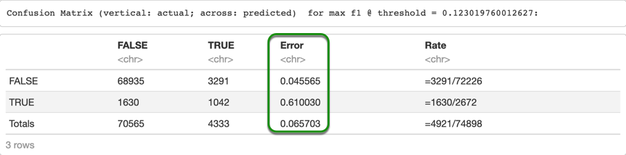
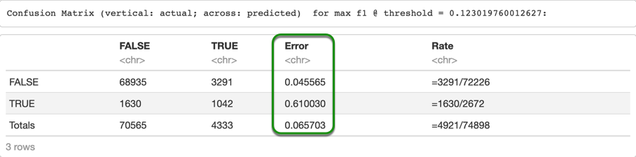
In this case, the GLM had the best overall misclassification error, then the GBM and lastly, the RF. However, the RF had a better performance when predicting the TRUE class, then the GBM, and lastly the GLM. Lastly, let's take a look at the F1 scores.
# Print the max F1 test score
h2o.F1(tuned_glm_test_perf, thresholds =
tuned_glm_test_perf@metrics$max_criteria_and_metric_scores$threshold[1])
h2o.F1(tuned_rf_test_perf, thresholds =
tuned_rf_test_perf@metrics$max_criteria_and_metric_scores$threshold[1])
h2o.F1(tuned_gbm_test_perf, thresholds = tuned_gbm_test_perf@metrics$max_criteria_and_metric_scores$threshold[1])
Output:
0.2872074
0.2975018
0.306301
All three F1 scores slightly improved compared to the default value, and are very close to the validation scores, which tell us that we can trust the validation set that we used to tune our models.
For this dataset, we obtained a good AUC for all three models. We obtained an okay F1 Score, given that our dataset is highly imbalanced, and we also obtained a good overall misclassification error, although due to the given imbalanced data, the error for the TRUE label was not so low. Overall, The best model trained on our dataset was the GBM, followed by the RF, and lastly, the GLM.
Shut down Cluster
Once you are done with the self-paced course, remember to shut down the cluster, unless you want to try the challenge after this task, in which case you can shut it down after you are done with the challenge.
h2o.shutdown()
After building three models, you are now familiar with the syntax of H2O-3 models. Now, try to build a Naive Bayes Classifier! You can do a 5 minutes grid search for laplace, min_prob, and eps_prob. Try it and see what's the best training, validation, and test AUC that you can get with the Naive Bayes Classifier and compare it to the models that we built in this self-paced course. Please keep in mind that the results might not improve by much, so do not spend too much time with this model. We just want you to feel more comfortable initializing models and doing grid searches. If you need more time with your lab, download your results, and restart the lab.
Remember to shut down the cluster if you have not done so, or end the lab if you are done with the self-paced course.
How to Obtain a Two Hour Test Drive Session
H2O-3 Test Drive is a two-hour lab session that exists in H2O's Aquarium. Aquarium is the H2O cloud environment providing software access for workshops, conferences, and training. All Aquarium labs have a specific Lab Duration to complete the lab.
1. Go to the Aquarium site by copying and pasting the URL below to a browser of your choice or simply click on Aquarium.
http://aquarium.h2o.ai/login
2. This will take you to the Aquarium login page where you need to create an account.
How to Create an Aquarium Account
1. Welcome to the Aquarium Login page!

2. Select Create a new account

3. Enter:
- First Name
- Last Name
- Organization (Could be your School)
- Country
4. Click on Create account and email temporary password at the bottom of the page.
Note: A password will be sent to your email within minutes.
5. Check your email for the password.
How to Login
1. Enter the email you used to create the Aquarium password.
2. Enter the password you received over email from Aquarium.
3. Complete the Captcha.
4. Click on Login.
Reset Password

1. If you forgot your password, select I forgot my password.

2. Enter your email, and another password will be emailed to you.
How to Start and End your Lab Session
1. After a successful login, click on Browse Labs, and you should see a list like the one shown below. Look for the lab H2O-3 Test Drive, Lab ID:2

2. Click on Start Lab and wait for your instance to be ready.

3. Once your instance is ready, you will see the following screen
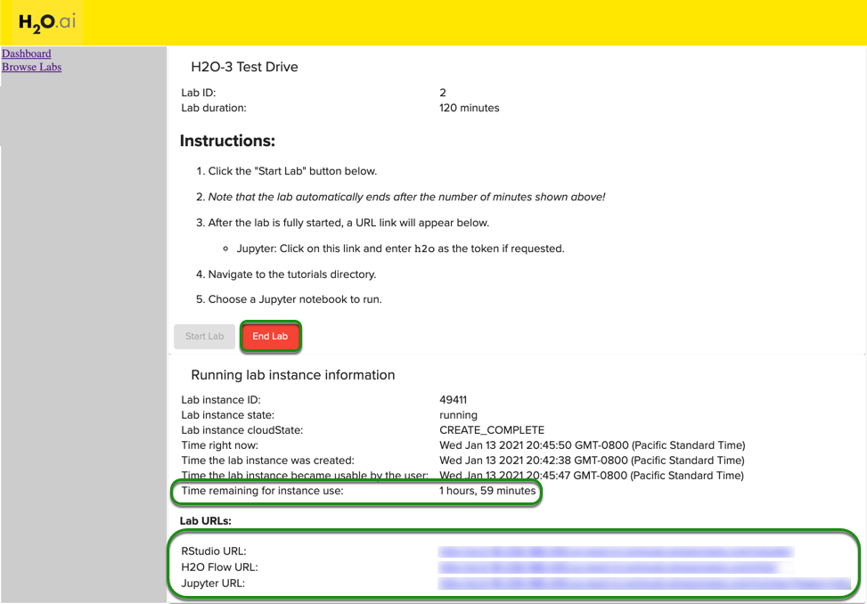
Note:
- End Lab
- The time remaining for the instance
- Lab URLs
4. Once the lab has started, you will see 3 links. The first link will be the RStudio URL, then the H2O Flow URL, and lastly, you will see the Jupyter URL.
If you are working with the Python version of the self-paced course, click on the Jupyter URL, and that will take you to the following screen.

Next, click on the tutorials folder. In this folder, you will find all the files for our self-paced courses from our learning path. For this self-paced course, select the file introduction-to-machine-learning-with-h2o-3-classification.ipynb and follow along. If you are working on a different self-paced course, just find the specific self-paced course and click on it. The Jupyter Notebooks have the same name as the self-paced courses; that way, it can be easier to find them.
If you are working with the R version of the self-paced course, click on the RStudio URL and it will take you to the RStudio sign in page. The username and password are h2o and h2o. Once you login to RStudio, you will see the following screen:
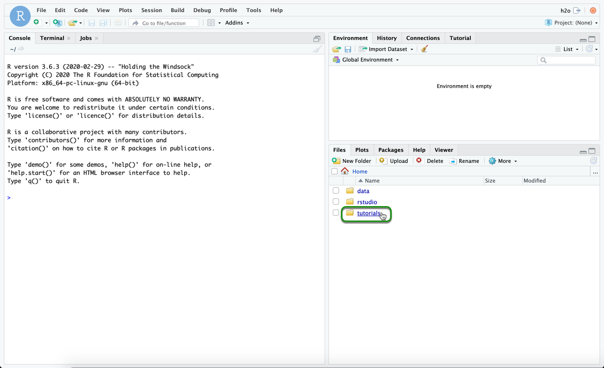
Click on the tutorials folder, and choose the self-paced course you want. For the classification self-paced course, select the file introduction-to-machine-learning-with-h2o-3-classification.Rmd and follow along.
If you want to access your Flow instance, go back to your Aquarium Lab, and click on the Flow URL.
Once you are done, you can download your Notebook with your results. Remember that after the two hours, all your progress will be lost.
5. If you need end your lab, just click on End Lab. Please keep in mind that this will terminate your instance, and any work that you have previously done, will be deleted.
Logout
1. To logout, click on the box on the top-right corner of the page and select logout.

Questions
Have any questions about Aquarium? Sign up for H2O's Slack Community and post your questions under the #cloud channel. Members of the H2O community will respond as soon as they are available.
Feel free to post any questions you may have in the Discussion tab.
If you do not have H2O-3, and you would like to install it on your personal machine, you can follow the installation guide on the H2O Documentation page
Please make sure you check our Regression self-paced course - Introduction to Machine Learning with H2O-3 - Regression.